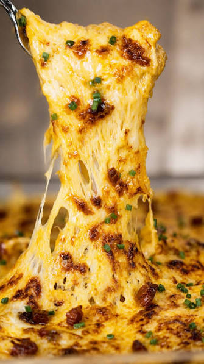

La Bomba de Mac & Cheese Empanizada

Esta es la favorita de la categoría Platos con antecedentes. Parece una hamburguesa normal por fuera, pero cuando la cortas explota queso. En esta receta, preparamos una bola de mac & cheese, la congelamos, la empanizamos y la freímos, y luego la metemos DENTRO de una hamburguesa doble con más queso encima. Es crujiente, cremosa, elástica y 100% tapa-arterias.